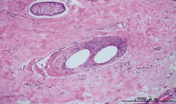
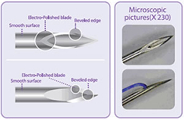

Products
Introduction of First Lift LFL
First Lift LFL is premium lifting thread made of PDO(Polydioxanone) which is absorbed
after proliferating collagen by stimulating fibroblast.
Any of you can experience overall face contouring, skin elasticity.
It brings natural and dramatic effect to face and body after simple and safe treatment.
The superior quality of the Ultra Thin Wall Needle allows the treatment easy, non-traumatic and painless.
THE BEST AND EASIEST TECHNIQUE FOR SKIN REJUVENATION AND LIFTING
Benefits
- Easy
- effective
- No downtime
Features
- Ultra Thin Wall High Quality Needle
- Qualified PDO thread
- Patented
- CE Class 3
- High Market Share
Effects
- Lifting
- Skin Rejuvenation (Tightening, Brightening)
- Wrinkle Removal
- Reduction of Cellulite
Mechanism
- Ultra Thin Wall Needle allows big size of PDO to be inserted into the needle
- Sharp/neat cutting edge by special grinding technology
- Special coating with less resistance enables the needle to be inserted into the skin smoothly
Technology
- Ultra Thin Wall Needle allows big size of PDO to be inserted into the needle
- Sharp/neat cutting edge by special grinding technology
- Special coating with less resistance enables the needle to be inserted into the skin smoothly

First Lift LFL Screw

Screw with spiral shape suture can lead to localized lifting and internal volumizing. And it widens spaces that the thread is contacted to the skin so that it allows more stimulation of collagen. Read more..
First Lift LFL Barb II

Barb II with bi directional cogs acts to hold the skin like double hooks when the thread is pulled. It is most powerful for any spe¬ cific body and face areas. Read more..